1. Which of the following is a correct name for (C2H5)2C=C(CH3)CH2CO2H? A) 4,4-diethyl-3-methyl-3-butenoic acid B) 4-ethyl-3-methyl-3-hexenoic acid C) 3-ethyl-4-methyl-3-hexenoic acid D) 3-ethyl-4-methyl-3-hexen-6-oic acid
2. Which of the following is 2-ethyl-3-formyl-pentanoic acid? A) C2H5CH(C2H5)CH(CO2H)CHO B) (C2H5)2CHCH(CHO)CO2H C) C2H5CH2CH(CHO)CO2C2H5 D) C2H5CH(CHO)CH(C2H5)CO2H
3 Which of the following compounds is not an anhydride?
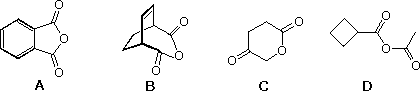
4. Which of the following compounds is not named correctly?
5. Which of the following compounds is not named correctly?
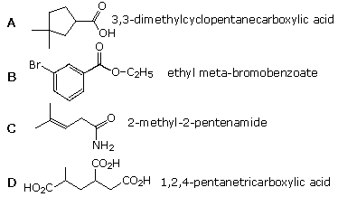
6. Which of the following compounds is not named correctly?
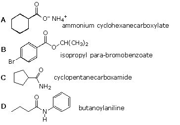
7 Which of the following compounds is not named correctly?
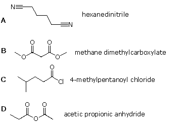
8 Which of the following common names does not represent a dicarboxylic acid? A) lactic acid B) succinic acid C) phthalic acid D) glutaric acid
9 Which of the following statements is not generally true? A) the boiling point of a carboxylic acid is higher than that of its methyl ester. B) methyl esters are more reactive acylating agents than their amide counterparts. C) amide hydrolysis may be carried out with either strong acid or base catalysis. D) Fischer esterification of acids with alcohols requires a strong base catalyst.
10 What is the order of increasing acidity for the following compounds? (weaker < stronger)
11 When comparing the acidity of propanoic acid and pyruvic acid, CH3COCO2H, which of the following statements is correct. A) propanoic acid has a lower pKa and a smaller Ka than pyruvic acid B) propanoic acid has a lower pKa and a larger Ka than pyruvic acid C) propanoic acid has a higher pKa and a larger Ka than pyruvic acid D) propanoic acid has a higher pKa and a smaller Ka than pyruvic acid
12 Consider the following dicarboxylic acids?
13 Dicarboxylic acids have two pKa's. For maleic acid (cis-2-butenedioic acid) these are pKa1 = 2.0, and pKa2 = 6.3 For fumaric acid (trans-2-butenedioic acid) these are pKa1 = 3.0, and pKa2 = 4.5 Which factor best explains why the cis-isomer has a smaller pKa1 and a larger pKa2 than the trans-isomer? A) intramolecular steric hindrance B) intramolecular dipole repulsion C) intramolecular hydrogen bonding D) selective solvation in water
14 An equimolar mixture of benzoic acid and benzyl alcohol is dissolved in equal volumes of ether and 5% aqueous NaOH. The resulting mixture separates into two immiscible liquid layers. Which of the following is approximately correct? A) both organic solutes are largely in the ether layer B) the benzyl alcohol is in the ether layer and the benzoic acid is in the water layer C) both organic solutes are largely in the water layer D) the benzyl alcohol is in the water layer and the benzoic acid is in the ether layer
15 Fischer esterification of phenylacetic acid with 1-propanol gave a mixture of 93% of the ester, propyl phenylacetate, contaminated with 7% unreacted acid. Which of the following treatments would be best used to purify the ester? A) reduce the unwanted acid with LiAlH4 in ether. B) wash an ether solution of the crude product with concentrated brine (aq. NaCl). C) wash an ether solution of the crude product with 5% aqueous sulfuric acid. D) wash an ether solution of the crude product with 5% aqueous sodium carbonate.
16 Which of the following would not be a useful reaction for preparing isobutyric acid, (CH3)2CHCO2H? A) 2-methyl-1-propanol + Jones' reagent B) 2-bromopropane + CO2; followed by hydrolysis C) cis-2,5-dimethyl-3-hexene + O3; followed by H2O2 D) 2-bromopropane + NaCN; followed by acid-catalyzed hydrolysis
17 Which of the following would not be a useful method for converting a carboxylic acid into an ester derivative? A) RCO2H + CH2N2 in ether B) RCO2H + (CH3)2C=CH2 & acid catalyst C) RCO2H + C2H5OH & acid catalyst + heat (-H2O) D) RCO2(-) Na(+) + (CH3)3CBr
18 Which of the following is an intermediate in the Fischer esterification of propanoic acid with ethanol? A) 1-propoxy-1,1-dihydroxyethane B) 2-propoxy-1,1-dihydroxyethane C) 1-ethoxy-1,1-dihydroxypropane D) 2-ethoxy-1,1-dihydroxypropane
19 Which of the following reagents does not react with benzoic acid, converting it into a different compound? A) NaI in acetone B) SOCl2 C) LiAlH4 in ether D) excess CH3Li in pentane
20 Which statement regarding isotope exchange of 18OH2 with the oxygen of a carboxyl group is correct? no exchange occurs under any circumstances base-catalyzed exchange is more effective than acid-catalyzed exchange acid-catalyzed exchange is more effective than base-catalyzed exchange acids and bases are equally effective in catalyzing an exchange
21 Which of the following compounds could not be converted into pivalic acid ( 2,2-dimethylpropanoic acid ) in three or fewer steps? A) 3,3-dimethyl-1-butene B) 2,3-dimethyl-2-butene C) 2,2-dimethyl-1-propanol D) 2-bromo-2-methylpropane
22 Treatment of benzoic acid with excess 18OH2 and a strong acid catalyst results in what change? A) both oxygens of the carboxyl group exchange with the 18O of the water B) only the carbonyl oxygen exchanges with the 18O of the water C) only the OH oxygen exchanges with the 18O of the water D) no change takes place
23 Two C8H9Br isomers form Grignard reagents which on carboxylation give isomeric carboxylic acids. Oxidation of each isomeric acid with hot KMnO4 produces the same C9H6O6 tricarboxylic acid. Which of the following compounds are the original isomeric bromides?
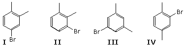
24 Which of the following reagents will reduce a carboxylic acid to a 1 º-alcohol under mild conditions?
25 What is the order of increasing base strength for the following salts? (weaker < stronger)
26 Reduction of 4-oxobutyric acid, also called succinic semialdehyde, by sodium borohydride followed by aqueous acid gives a C4H6O2 product. This product is which of the following compounds?
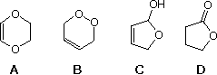
27 Which compound does not react with ammonia to form propanamide under mild conditions? A) propanoic acid B) propanoyl chloride C) ethyl propanoate D) propanoic anhydride
28 Which sequence of reactions would be best for the conversion of toluene into para-bromophenylacetic acid.? ( NBS = N-bromosuccinimide ) A) i) Br2 & FeBr3; ii) KMnO4 & heat; iii) NaCN in ethanol; iv) H3O(+) & heat B) i) Br2 & FeBr3; ii) NBS in CCl4; iii) Mg in ether followed by CO2; iv) H3O(+) C) i) Br2 & FeBr3; ii) NBS in CCl4; iii) NaCN in ethanol; iv) H3O(+) & heat D) i) Br2 & FeBr3; ii) KMnO4 & heat; iii) Mg in ether followed by CO2; iv) H3O(+)
29 On heating in the presence of bromine, 2,2-dimethyl-3-oxobutyric acid produces 3-bromo-3-methyl-2-butanone. What unstable intermediate is involved in this reaction? A) 1,2,2-trimethylcyclopropanol B) 2,2-dimethyl β butyrolactone C) 2-hydroxy-3-methylbutene D) dimethylketene
30 Fischer esterification of mesitoic acid ( 2,4,6-trimethylbenzoic acid ) is extremely slow compared with benzoic acid itself. What is the major factor accounting for this difference in reactivity? A) steric hindrance by the ortho methyl groups. B) the electron donating inductive effect of the methyl substituents. C) acid-catalyzed rearrangement of the methyl substituents. D) rapid acid-catalyzed decarboxylation of mesitoic acid.
31 Which of the following reagents would be best for reducing an ester to an aldehyde? A) LiAlH4 in ether B) B2H6 in ether C) NaBH4 in aqueous ethanol D) diisobutylaluminum hydride (DIBAH) in toluene at -78 ºC
32 Which of the following reagents are suitable for reducing an amide to an aldehyde?
33 Which of the following reagents are suitable for reducing an acyl chloride to an aldehyde?
34 Which of the following methods would not be useful for preparing ketones?
35 What is the expected product from the double reaction drawn below?
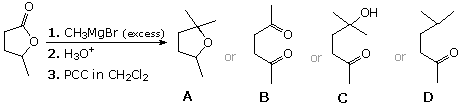
36 Which of the following reactions is most likely to produce ethyl propanoate? A) sodium ethoxide + propanoic acid B) propanol + acetyl chloride C) sodium propanoate + acetic anhydride D) potassium propanoate + ethyl iodide
37 If diethyl amine is treated separately with the following derivatives of isobutyric acid, what order of reactivity is expected? greater reactivity > lesser reactivity
38 Methyl esters of carboxylic acids, RCO2CH3, have somewhat higher molecular masses than 1 º-amide, RCONH2, derivatives of the same acid. However, the amides have much higher boiling points. What is responsible for this difference? A) hydrogen bonding molecular association. B) resonance conjugation of N with C=O C) the lower electronegativity of N versus O D) rapid pyramidal inversion of the nitrogen
39 What is the expected product from the reaction sequence drawn below?
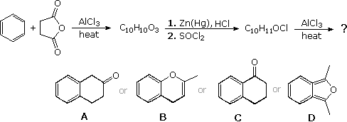
40 Ethyl acetate undergoes the following sequence of reactions: 1. treatment with excess phenylmagnesium bromide in ether 2. heating with conc. H3PO4 3. treatment B2H6 in ether, followed by alkaline H2O2 4. treatment with Jones' reagent (CrO3 in aqueous acid + acetone) Which of the following is the expected product? note that C6H5 = phenyl
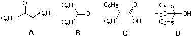
41 The C–NH2 bond in acetamide is 0.1 Å shorter than the C–NH2 bond in ethylamine. Why? A) N:H repulsion in ethylamine B) hyperconjugation in ethylamine C) dipole interactions in acetamide D) p-π resonance in acetamide
42 Which of the following is not named correctly?
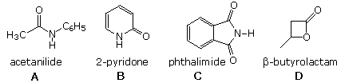
43 Methyl butyrate is reacted with excess ammonia, and the product is then treated with bromine in aqueous NaOH. What is the expected product? A) butylamine B) pentylamine C) propylamine D) N-bromobutyramide
44 Which reactions would best accomplish the following transformation?
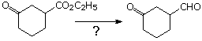
45 Ethyl propanoate is added to an ethanol soution of sodium ethoxide and heated to reflux for several hours. The product was then refluxed in 5% HCl for several more hours, and extracted with ether What compound has been prepared by this procedure?
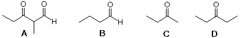
46 Adipic acid is converted to its diacid chloride by reaction with SOCl2, and this then reacts with 2 equivalents of sodium azide in ether solution. Addition of conc. HCl, followed by heating, results in considerable gas evolution and the formation of a crystalline water soluble solid. What is this product? Hint: addition of aq. NaOH to the solid produces a foul smelling liquid. A) 1,4-diaminobutane, dihydrochloride salt B) 1,5-diaminopentane, dihydrochloride salt C) 1,6-diaminohexane, dihydrochloride salt D) diammonium adipate
47 What donor and acceptor reactants should be used to prepare the following compound by a Claisen condensation?
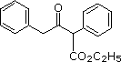
48 What donor and acceptor reactants should be used to prepare the following compound by a Claisen condensation?
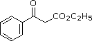
49 What donor and acceptor reactants should be used to prepare the following compound by a Claisen condensation?
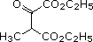
50 A Dieckmann condensation of diethyl adipate was carried out by heating with sodium ethoxide. One equivalent of benzyl bromide was added, and the resulting mixture was then refluxed in 5% HCl for several hours, and extracted with ether. What compound has been prepared by this procedure?
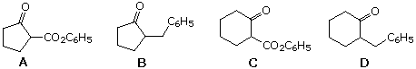
51 2,2-Dimethyl-1,3-cyclohexanedione is refluxed several hours in an aqueous dioxane solution of sodium hydroxide (10%). The resulting solution is adjusted to pH=5 by addition of dilute HCl and then extracted with ether. What compound has been prepared by this procedure? A) 2-cyclohexenone B) 5-oxohexanoic acid C) 6-methylheptanoic acid D) 5-oxo-6-methylheptanoic acid
52 The malonic ester synthesis is useful for preparing substituted acetic acids. Which of the following would not be easily prepared by this method?
53 Which set of reaction conditions is best suited for the preparation of 2,2-dimethylpropanoic acid from 2-bromo-2-methylpropane? A) 1. NaCN in ethanol; 2. H3O(+) & heat B) 1. NaC≡CH in ether; 2. aqueous KMnO4 & heat C) 1. Mg in ether; 2. CO2, then H3O(+) D) 1. Mg in ether; 2. CH3CHO; 3. Jones' reagent
54 Which set of reaction conditions is best suited for the preparation of 5-oxo-hexanoic acid from 5-bromo-2-pentanone? A) 1. NaCN in ethanol; 2. H3O(+) & heat B) 1. NaC≡CH in ether; 2. aqueous KMnO4 & heat C) 1. Mg in ether; 2. CO2, then H3O(+) D) 1. NaOH in ethanol; 2. Jones' reagent
55 Which of the following is most readily decarboxylated on heating? A) sodium 4-oxopentanoate B) succinic acid C) phthalic acid D) 4-methyl-3-pentenoic acid
56 Which one of the following compounds would react with C2H5MgBr to make 3-pentanol ? A) ethanal B) ethyl formate C) acetic acid D) acetone
57 The acetoacetic ester synthesis is useful for preparing methyl ketones. Which of the following would not be easily prepared by this method?
58 Devise a series of reactions to convert ethyl 3-oxobutyrate to ethyl 4-oxopentanoate. Select reagents and conditions from the following table, listing them in the order of use.
59 A C7H9N base reacts with sodium nitrite and hydrochloric acid at 0 ºC, giving a clear solution. On heating with KCN and Cu2(CN)2 a gas evolves, and continued heating with conc. HCl yields a C8H8O2 crystalline acid. Heating this acid with aqueous KMnO4 produces a C8H6O4 product, which dehydrates on strong heating to give a crystalline C8H4O3 compound. What is the C7H9N base? A) benzylamine B) N-methylaniline C) para-toluidine (the toluidines are aminotoluenes) D) ortho-toluidine
60 Heating diethyl malonate with 2 equivalents of ethyl acrylate and 1.2 equivalents of sodium ethoxide, followed by neutralization of the base, produces a C15H22O7 compound. Heating this compound in 10%H4SO4 yields a C7H10O3 crystalline carboxylic acid. What is this product? A) 2-oxocyclohexane-1-carboxylic acid B) 3-oxocyclohexane-1-carboxylic acid C) 4-oxocyclohexane-1-carboxylic acid D) 3-(2-oxocyclobutyl)propanoic acid
61 Which of the following acids does not decarboxylate on heating?
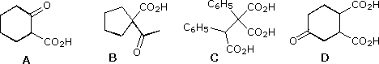